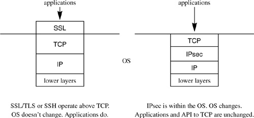

Networking Security Networking Security Networking Security Security Networking Security Networking Security Networking Charlie Kaufman Radia Perlman Mike Speciner Prentice Hall Network Security: Private Communication in a Public World, Second Edition Networking Security Networking Security Networking Security Security Networking Security Networking Security Networking Charlie Kaufman Radia Perlman Mike Speciner Prentice Hall Network Security: Private Communication in a Public World, Second Edition
16.1. What Layer?
Definition of a layer n protocol: anything defined by a committee whose charter is to define a layer n protocol.
ÂRadia Perlman (in Interconnections: Bridges, Routers, Switches, and Internetworking Protocols)
SSL/TLS and SSH are said to be "implemented at layer 4", whereas IPsec is said to be "implemented at layer 3". What does it mean that a real-time communication security protocol is implemented at layer 3 vs. layer 4, and what are the implications? (For a definition of the layers, see §1.5.1 OSI Reference Model.)
For brevity, since for the principles discussed in this chapter, SSL/TLS and SSH have the same properties, in this chapter we'll simply say SSL when we mean any of the protocols SSL, TLS, or SSH.
Many IP stacks are implemented so that layer 4 (e.g., TCP) and below are implemented in the operating system, and anything above is implemented in a user process. The philosophy of SSL is that it is easier to deploy something if you don't have to change the operating system, so these protocols act "above TCP". It requires the applications to interface to SSL instead of TCP. The name Secure Sockets Layer comes from the most popular API to TCP, which is called "sockets". The API to SSL is a superset of the API to TCP sockets. Modifying an application to work on top of SSL requires minimal changes. Of course, the security benefits are limited if the richer API is not used.
Although the applications have to be modified (albeit minimally), the operating system, which includes TCP and the layers below it, does not need to be modified. "Transport Layer Security" is somewhat of a misnomer because rather than being at layer 4, these protocols tend to act like a layer on top of layer 4.

In contrast, the philosophy behind IPsec is that implementing security within the operating system automatically causes all applications to be protected without the applications having to be modified.
There is a problem in operating above TCP. Since TCP will not be participating in the cryptography, it will have no way of noticing if malicious data is inserted into the packet stream, as long as the bogus data passes the (noncryptograpic) TCP checksum. TCP will acknowledge such data and send it up to SSL. SSL will discard it because the integrity check will indicate the data is bogus, but there is no way for SSL to tell TCP to accept the real data at this point. When the real data arrives, TCP will assume it is duplicate data and discard it, since it will have the same sequence numbers as the bogus data. SSL has no choice but to close the connection, since it can no longer provide the service that the API claims it offers, namely a lossless stream of data. An attacker can launch a successful denial-of-service attack by inserting a single packet into the data stream. IPsec's approach of cryptographically protecting each packet independently can better protect against such an attack.
In contrast, IPsec's constraint of not modifying the applications winds up with its own serious problem. With the current commonly used API, IP tells the application only what IP address it is talking to, not what user is on the other end. So IPsec, with the current API, cannot tell the application anything more than which IP address is on the other end, even though IPsec is capable of authenticating an individual user. Most applications need to distinguish between users. If IPsec has authenticated the user, it could in theory tell the application the user's name, but that would require changing the API and the application.
Implementing IPsec without changing the application has the same effect as putting firewalls between the two systems and implementing IPsec between the firewalls. It accomplishes the following:
It causes the traffic on the path between the communicating parties to be encrypted, hiding it from eavesdroppers. As with firewalls, IPsec can access a policy database similar to what a firewall can access. For instance, it can specify which IP addresses are allowed to talk to which other IP addresses, or which TCP ports should be allowed or excluded. This is true whether the endpoint of the IPsec connection is a firewall or an endnode (see §23.1 Packet Filters). Some applications do authentication based on IP addresses (see §9.2 Address-Based Authentication). The API informs the application of the IP address from which information was received. Before IPsec, the source IP address was assumed based solely on the value of the SOURCE ADDRESS field in the IP header. With IPsec, address-based authentication becomes much more secure because one of the types of endpoint identifiers IPsec can authenticate is an IP address.
What IPsec (with the current API and an unmodified application) does not accomplish for the application is authentication of anything other than IP addresses. Most principals would have some identity such as a name, and be allowed to access the network from a variety of IP addresses. In these cases, the most likely scenario for using IPsec is that IPsec would do its highly secure and expensive authentication, authenticating based on the user's public key and establishing a security association to the user's name, but would have no way of telling the application who is on the other side. The application would have to depend on existing mechanisms, most likely a name and password, to determine which user it is talking to. IPsec is still of value in this scenario in which the (unmodified) application authenticates the user based on name and password, since the name and password will now be encrypted when transmitted.
To take full advantage of IPsec, applications will have to change. The API has to change in order to pass identities other than IP addresses, and the applications have to change to make use of this information. So the best solution is one where both the operating system and the applications are modified. This illustrates why security would best be done by being designed in from the start, rather than being added in with the least modification to an existing implementation.
One other advantage of the packet-by-packet cryptographic handling of IPsec is that it is easier to build an outboard device that does IPsec processing. To implement an SSL-type protocol that operates over TCP in an outboard device, the device would have to implement TCP, including buffering out-of-order packets.
|